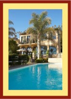
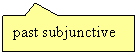
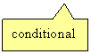
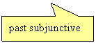
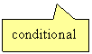

Hai già scoperto se va tutto bene nella tua vita o c'è qualcosa che ... Non gira?
Ora cerca di guardare nel futuro: cosa conta per te più di tutto, di cosa non vorresti assolutamente fare a meno?
Come si fa il test
Scegli anzitutto, tra le 4 immagini proposte, quella che senti più vicina al tuo modo di essere (tieni conto anche del colore della cornice in cui è inserita l'immagine).
Scrivi il numero corrispondente nella casella qui accanto.
Scegli una risposta per ciascuna di queste 4 domande:
Guarda l'immagine a fianco. Se fossi uno dei protagonisti cosa penseresti?
- Una poesia, del tipo: ‘Se tu mi amassi, se io ti amassi, come ti amerei ...’
- Sto facendo un buon affare!
- Non sempre tutto andrà bene con te, ma sarò felice lo stesso.
- La tua bellezza mi attrae più di ogni altra cosa.
Risposta
Se questa villa fosse tua, quale frase scriveresti all'ingresso?
- Errare è fragilità, perdonare è amore.
- La ricchezza è garanzia di felicità.
- Nessuno arriva in Paradiso con gli occhi asciutti.
- Ricchi si diventa, seducenti si nasce.
Risposta
Quali pensieri ti ispira questa immagine?
- Quando non si ha ciò che si ama, bisogna amare ciò che si ha.
- Il segreto della vita: rimanere semplici ma pensare con grandezza.
- La paura è la cosa di cui avere più paura.
- Con un aspetto fisico curato si può vivere alla grande.
Risposta
Cosa si pensa quando ci si sente molto ammirati?
- Piacere non conta se non c'è l'amore.
- Per ottenere ciò che vuoi devi lottare.
- Ci si apprezza per ciò che si è e ciò che si è stati.
- Si spera di incontrare qualcuno da ammirare a propria volta ...
Risposta
Soluzioni
Ogni risposta vale 1 punto, tranne quella relativa alla scelta dell'immagine, che vale 3 punti.
Per facilitarti il conteggio, abbiamo già inserito i dati in tabella: cancella (evidenzia e poi 'canc') quelli che non corrispondono alle risposte date, lasciando solo le tue scelte Poi scrivi i totali nelle caselle in basso.
| Domande n. | Risposta A | Risposta B | Risposta C | Risposta D |
|---|---|---|---|---|
| 1 | ||||
| 2 | ||||
| 3 | ||||
| 4 | ||||
| Colore cornice | Rosso | Marrone | Verde | Giallo |
| Totale punti |
Nel futuro, ciò che più desideri è:
Maggioranza di Risposte A: Amore e amicizia
Maggioranza di Risposte B: Potere e ricchezza
Maggioranza di Risposte C: Autostima ed equilibrio
Maggioranza di Risposte D: Bellezza e seduttività
Al primo posto hai ottenuto ...
Amore e amicizia Sei una persona romantica e realista nello stesso tempo, che conosce il valore degli altri e che negli altri trova sostegno e motivazioni per fare delle scelte e raggiungere delle mete.Potere e Ricchezza
Sei una persona che prima pensa a vivere, poi a filosofare. Per te la vita è un treno che deve portare verso il benessere materiale e se vi sono scorciatoie da prendere è giusto approfittarne.Autostima ed equilibrio
Conoscerti, accettare le tue fragilità, valorizzare i tuoi punti di forza, smussare gli angoli e guardare lontano sono i mezzi ed i fini della tua esistenza.Bellezza e seduttività
Per te il piacere estetico, l’eleganza, il piacere della seduzione, il magico incontro con l'altro/a sono le cose che rendono la vita degna di essere vissuta.
Reproduced with the permission of Psicolinea.it
The following phrases are used in the quiz.
Se fossi uno dei protagonisti cosa penseresti?

Se questa villa fosse tua, quale frase scriveresti all'ingresso?

To find out more about this language structure, go to
This structure will be useful when speaking about dreams, aspirations and other hypothetical situations.
To complete response, clicca Cosa vuoi dalla vita?